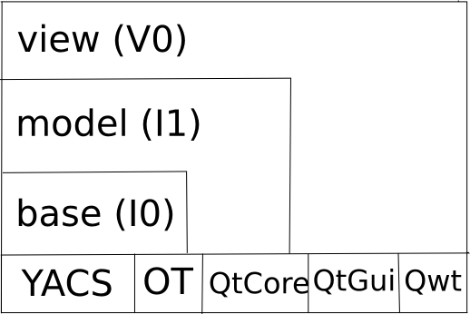
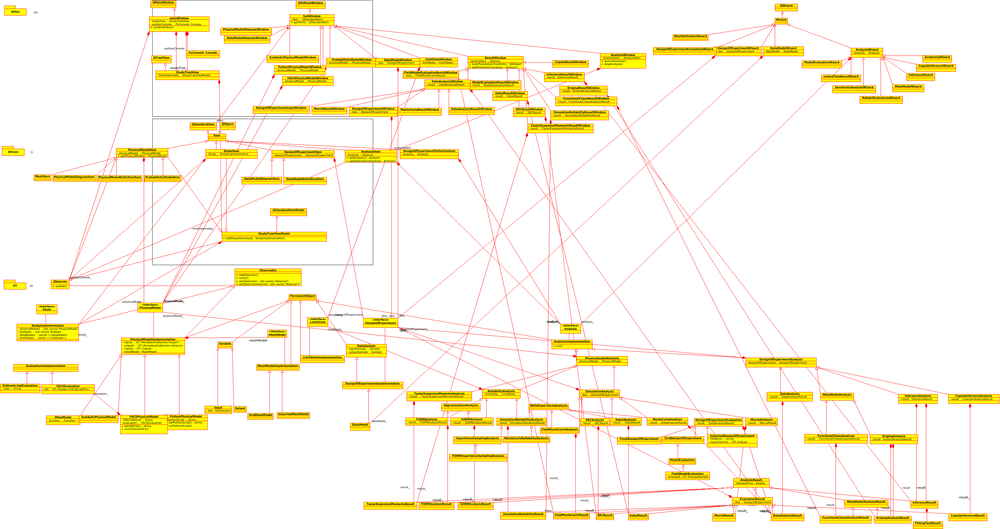

Architecture considerations¶
Dependencies¶
Several dependencies are needed in order to build the GUI:
CMake >=3.15
OpenTURNS >=1.27
otfmi >=0.14 (optional, for FMI support)
otmorris >=0.20 (optional, for Morris support)
Qt >=5.15
Qwt >=6
Python >=3.8
SWIG >=4
Boost.regex library
Boost.program_options (optional, for win32 launcher)
Boost.stacktrace (/backtrace) library (optional, to dump the call stack)
SalomeYACS (optional, for YACS support)
Sphinx >=1.8 (optional, for doc)
Numpydoc >=0.9 (optional, for doc)
ParaView >=5.11 (optional, for visualization)
Paramiko >=2.12.0 (optional, for ssh coupling models)
Environment variables¶
LANGUAGE: can be set to en|fr to override the language on Linux
PERSALYS_HTML_PATH: override path to the html documentation
PERSALYS_NO_GL: if defined, this disables OpenGL (used for ParaView widgets)
PERSALYS_CALIBRATION_ENGINE: if defined to “adao” and adao support is enabled this switches to adao for calibration computations
Compilation¶
git clone https://github.com/persalys/persalys.git
cd persalys
cmake \
-DCMAKE_INSTALL_PREFIX=$PWD/install \
-DOpenTURNS_DIR=$PWD/../../openturns/build/install/lib/cmake/openturns \
-DParaView_DIR=$PWD/../../paraview/build/install/lib/cmake/paraview \
-DOTMORRIS_DIR=$PWD/../../otmorris/build/install/lib/cmake/otmorris \
-B build .
cmake --build build --target install
To run it:
./build/persalys.sh
Translation¶
lupdate -verbose lib/ -ts translations/persalys_fr.ts -no-obsolete
linguist translations/persalys_fr.ts
Python console menu translation:
lupdate -verbose lib/src/view/PyConsole/ -ts lib/src/view/PyConsole/resources/PyConsole_msg_fr.ts -no-obsolete
linguist lib/src/view/PyConsole/resources/PyConsole_msg_fr.ts
publish PyConsole_msg_fr.qm in translations/
Source code structure¶

The GUI classes are organized by 3 layers: I0, I1, V0. This layered organization is reflected in the sources with three different folders and their associated sub-libraries.
Here is the global class diagram for each layer:

Details on implementing a new type of object¶
Pull request
!523shows the implementation of a new type of object intended to be used in a study, along with its associated analysis and resultsStart by implementing
ObjectandObjectImplementationclassesA new type of object
Objectmust belong to either one of the existing or a newCollectionasStudyImplementationattributes, along with the appropriateStudyImplementationmethods (getObjects,getObjectByName,hasObjectNamed,getAvailableObjectName,add,remove)Implement in
src/modelObjectItem: base classObjectDefinitionItem: for handlingObjectand study tree interactionsObjectDiagramItem: for handlingObjectand diagram window interactions
Create an action in
src/model/ItemFactoryintended to add theObjectto the studyThis action is connected to a new button in
src/view/StudyWindowObserverclass must implement a dedicatedappendItem(const Object&)method, this allows to call a newObjectWindowImplement in
src/viewObjectDiagramWindow: dedicatedObjectdiagram windowObjectWindow: dedicatedObjectwindow forObjectdefinition
Add a case in
WindowFactory::GetWindow, based on thesrc/model/ObjectItemto allow the instantiation of the twoObjectWindowandObjectDiagramWindow
Implementing a new type of analysis¶
Create necessary base classes (
{Type}Analysisand{Type}AnalysisResult)Add .i and _doc.i files for SWIG in
python/srcCreate a python test in
python/testCreate the Window classes in
src/viewEdit
src/view/WindowFactory.cxx,src/view/{ModelType}DiagramWindow.cxxEdit
ItemFactory::createActioninsrc/model/ItemFactory.cxxCreate action in
src/model/{ModelType}DiagramItem.cxxAdd user documentation